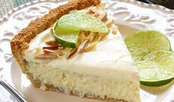

Key Lime Pie

Key Lime Pies are the most iconic dessert in the Florida Keys. If you are
are not heading down to Florida any time soon this recipe is an
easy replacement to hold you over! If you have time, a homemade
graham cracker crust is better! Garnish with whipped cream
and thin slices of lime if you like.
Ingredients
- 1 (9 inch) prepared graham cracker crust
- 3 cups sweetened condensed milk
- 1/2 cup sour cream
- 3/4 cup key lime juice
- 1 tablespoon grated lime zest
Directions
- Preheat oven to 350° F
- In a medium bowl, combine condensed milk, sour
cream, lime juice, and lime rind. Mix well and
pour into graham cracker crust.
- Bake in preheated oven for 5 to 8 minutes,
until tiny pinhole bubbles burst on the surface
of pie. DO NOT BROWN! Chill pie thoroughly before
serving. Garnish with lime slices and whipped
cream if desired.